International Faculty
Báo cáo viên quốc tế
16 Faculty. 9 Countries. One Summit.
16 chuyên gia. 9 quốc gia. Một hội nghị.
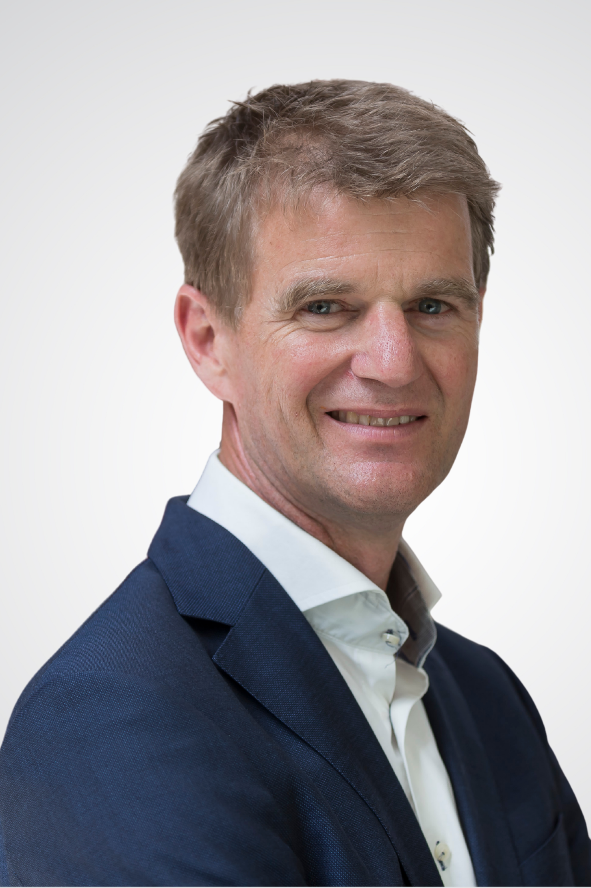
Corstiaan Breugem, MD, PhD
GS.TS.BS. Corstiaan Breugem
Professor, Plastic & Reconstructive Surgery
University of Amsterdam · Emma Children's Hospital, Netherlands
University of Amsterdam · Emma Children's Hospital, Netherlands
Giáo sư Phẫu thuật Tạo hình & Tái tạo
Đại học Amsterdam · Bệnh viện Nhi Emma, Hà Lan
Đại học Amsterdam · Bệnh viện Nhi Emma, Hà Lan
🇳🇱
Dr. Corstiaan Breugem is a Professor of Plastic, Reconstructive and Hand Surgery at the University of Amsterdam and a pediatric plastic surgeon at the Emma Children’s Hospital. He also serves as Director of Interplast Holland, an international NGO focused on building sustainable plastic surgery capacity in low-income countries through training, mentorship, and funding.
Bác sĩ Corstiaan Breugem là Giáo sư Phẫu thuật Tạo hình, Tái tạo và Phẫu thuật Bàn tay tại Đại học Amsterdam, đồng thời là bác sĩ phẫu thuật tạo hình nhi khoa tại Bệnh viện Nhi Emma. Ông cũng giữ vai trò Giám đốc Interplast Holland, một tổ chức phi chính phủ quốc tế tập trung vào việc xây dựng năng lực phẫu thuật tạo hình bền vững tại các quốc gia có thu nhập thấp thông qua đào tạo, cố vấn chuyên môn và hỗ trợ tài chính.
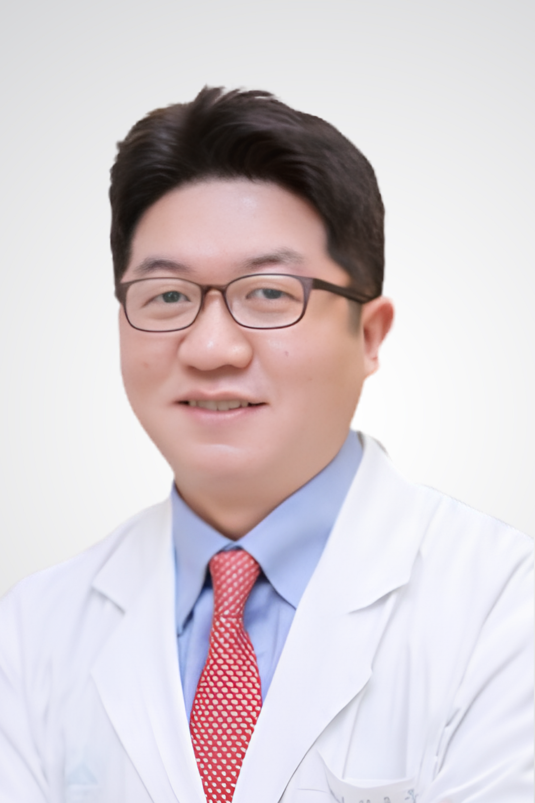
Jong-Woo Choi, MD, PhD, MMM
GS.TS.BS. Jong-Woo Choi
Professor & Chief, Plastic & Reconstructive Surgery
Asan Medical Center, Ulsan University · Seoul, South Korea
Asan Medical Center, Ulsan University · Seoul, South Korea
Giáo sư Trưởng khoa Phẫu thuật Tạo hình & Tái tạo
Trung tâm Y khoa Asan, Đại học Ulsan · Seoul, Hàn Quốc
Trung tâm Y khoa Asan, Đại học Ulsan · Seoul, Hàn Quốc
🇰🇷
Dr. Jong-Woo Choi is a Professor and Chair of Plastic and Reconstructive Surgery at Asan Medical Center, South Korea. He earned his M.D. from Yonsei University, completed his residency at Severance Hospital, and later obtained a Ph.D. from the University of Ulsan, along with a Master of Medical Management (MMM) from the University of Southern California.
Bác sĩ Jong-Woo Choi là Giáo sư và Trưởng khoa Phẫu thuật Tạo hình và Tái tạo tại Trung tâm Y khoa Asan, Hàn Quốc. Ông tốt nghiệp Bác sĩ Y khoa tại Đại học Yonsei, hoàn thành chương trình nội trú tại Bệnh viện Severance, và sau đó nhận bằng Tiến sĩ tại Đại học Ulsan, đồng thời hoàn thành chương trình Thạc sĩ Quản lý Y tế (MMM) tại Đại học Nam California.
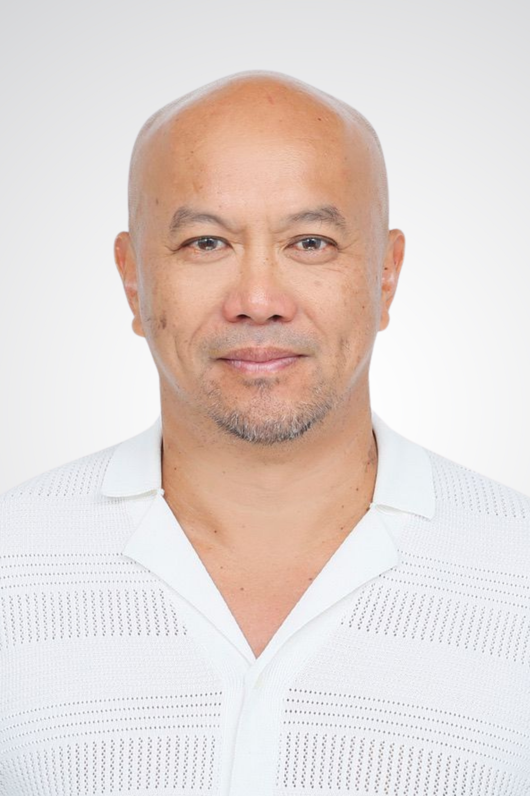
David K. Chong, MD
PGS.BS. David K. Chong
Associate Professor, University of Melbourne
Royal Children's Hospital · Melbourne, Australia
Royal Children's Hospital · Melbourne, Australia
Phó Giáo sư, Đại học Melbourne
Bệnh viện Nhi Hoàng gia · Melbourne, Úc
Bệnh viện Nhi Hoàng gia · Melbourne, Úc
🇦🇺
Dr. David Chong is an Associate Professor at the University of Melbourne and a craniofacial surgeon at the Royal Children’s Hospital, Australia. He completed his plastic surgery training in Western Australia before pursuing advanced fellowships in cleft lip and palate and craniofacial surgery in Dallas and Toronto, working at leading centers including the International Craniofacial Institute and the Hospital for Sick Children.
Bác sĩ David Chong là Phó Giáo sư tại Đại học Melbourne và là bác sĩ phẫu thuật sọ mặt tại Bệnh viện Nhi Hoàng gia, Úc. Ông hoàn thành đào tạo chuyên ngành phẫu thuật tạo hình tại Tây Úc, sau đó tiếp tục các chương trình đào tạo chuyên sâu về khe hở môi – vòm miệng và phẫu thuật sọ mặt tại Dallas và Toronto, làm việc tại các trung tâm hàng đầu như Viện Phẫu thuật Sọ mặt Quốc tế và Bệnh viện Nhi SickKids.
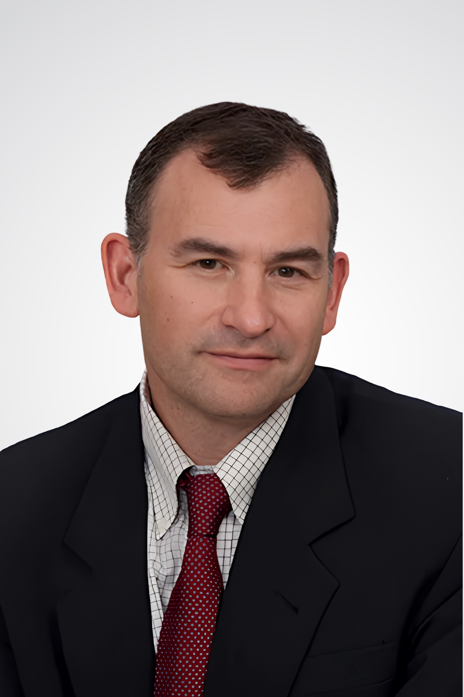
David Fisher, MD
GS.BS. David Fisher
Medical Director, Cleft Lip & Palate Program
Hospital for Sick Children (SickKids), University of Toronto · Canada
Hospital for Sick Children (SickKids), University of Toronto · Canada
Giám đốc Y khoa, Chương trình Khe hở môi – vòm miệng
Bệnh viện Nhi SickKids, Đại học Toronto · Canada
Bệnh viện Nhi SickKids, Đại học Toronto · Canada
🇨🇦
Dr. David Fisher is the Medical Director of the Cleft Lip and Palate Program at The Hospital for Sick Children (SickKids), one of the world’s leading pediatric centers for craniofacial care. His clinical practice is fully dedicated to pediatric patients, with a primary focus on cleft lip and palate and auricular reconstruction.
Bác sĩ David Fisher là Giám đốc Chương trình Khe hở môi – vòm miệng tại Bệnh viện Nhi SickKids (The Hospital for Sick Children), một trong những trung tâm hàng đầu thế giới về điều trị sọ mặt nhi khoa. Hoạt động lâm sàng của ông tập trung hoàn toàn vào bệnh nhi, với chuyên môn chính trong điều trị khe hở môi – vòm miệng và tái tạo vành tai.
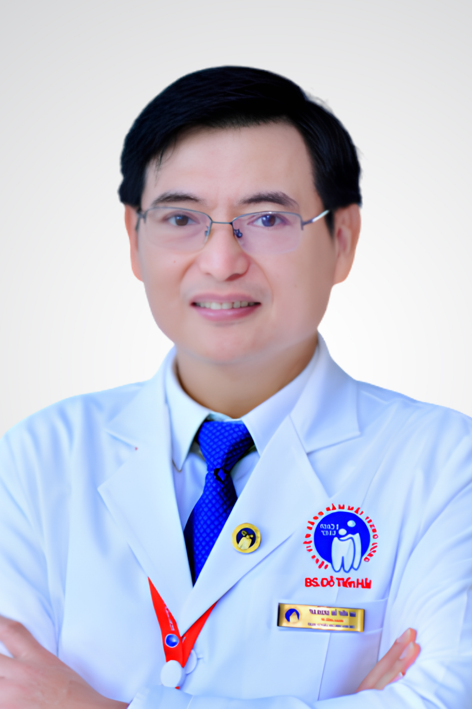
Do Tien Hai, MD, MSc.
ThS.BSCKII. Đỗ Tiến Hải
Head, Plastic & Reconstructive Surgery
National Odonto-Stomatology Hospital · Ho Chi Minh City, Viet Nam
National Odonto-Stomatology Hospital · Ho Chi Minh City, Viet Nam
Trưởng khoa Vi phẫu – Tạo hình Hàm mặt
Bệnh viện Răng Hàm Mặt Trung ương TP.HCM · Việt Nam
Bệnh viện Răng Hàm Mặt Trung ương TP.HCM · Việt Nam
🇻🇳
Dr. Do Tien Hai is a maxillofacial and plastic surgeon based in Ho Chi Minh City, Viet Nam, currently serving as Head of the Plastic and Reconstructive Surgery Department at the National Hospital of Odonto-Stomatology. With nearly two decades of clinical experience, he is actively involved in the surgical management of complex maxillofacial conditions.
Bác sĩ Đỗ Tiến Hải là chuyên gia phẫu thuật hàm mặt và tạo hình tại TP. Hồ Chí Minh, hiện giữ chức vụ Trưởng khoa Phẫu thuật Tạo hình – Vi phẫu Hàm mặt tại Bệnh viện Răng Hàm Mặt Trung ương TP.HCM. Với gần 20 năm kinh nghiệm lâm sàng, ông tham gia điều trị nhiều bệnh lý hàm mặt phức tạp.
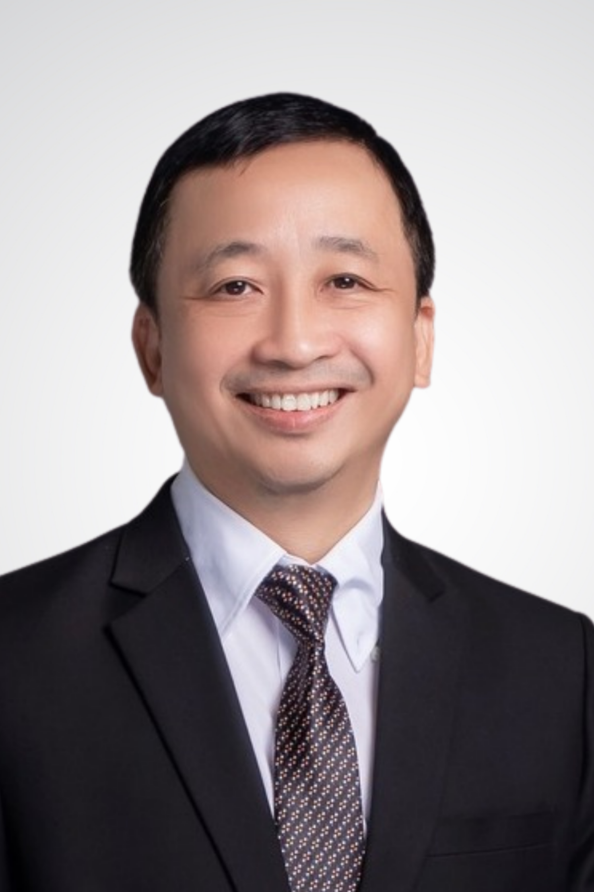
Le Thua Trung Hau, MD, PhD
TS.BS. Lê Thừa Trung Hậu, TS.BS
Head, Plastic, Aesthetic & Maxillofacial Surgery
Hue Odonto-Stomatology Hospital · Hue, Viet Nam
Hue Odonto-Stomatology Hospital · Hue, Viet Nam
Trưởng khoa Phẫu thuật Tạo hình & Thẩm mỹ
Bệnh viện Răng Hàm Mặt Huế · Huế, Việt Nam
Bệnh viện Răng Hàm Mặt Huế · Huế, Việt Nam
🇻🇳
Dr. Le Thua Trung Hau is a plastic, reconstructive, and aesthetic surgeon based in Hue, Viet Nam, with over 25 years of clinical experience. He currently serves as Head of Plastic, Aesthetic and Maxillofacial Surgery at Hue Odonto-Stomatology Hospital and Professional Director of Bleu de Hué Aesthetic Institute.
Bác sĩ Lê Thừa Trung Hậu là chuyên gia phẫu thuật tạo hình, tái tạo và thẩm mỹ tại Huế, Việt Nam, với hơn 25 năm kinh nghiệm lâm sàng. Ông hiện là Trưởng khoa Phẫu thuật Tạo hình, Thẩm mỹ và Hàm mặt tại Bệnh viện Răng Hàm Mặt Huế, đồng thời là Giám đốc chuyên môn của Viện Thẩm mỹ Bleu de Hué.
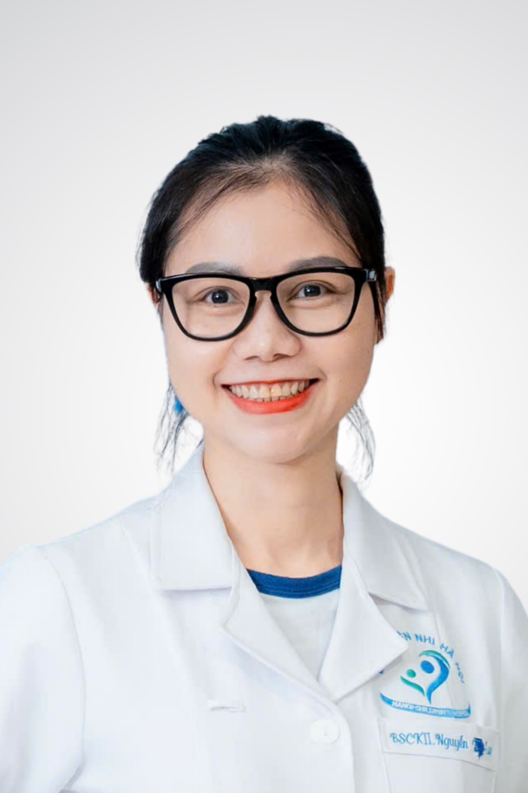
Nguyen Thi Ngoc Lan, MD, MSc.
ThS.BSCKII. Nguyễn Thị Ngọc Lan
Chief, Maxillofacial Surgery · Comprehensive Cleft Care Center
Ha Noi Children's Hospital · Ha Noi, Viet Nam
Ha Noi Children's Hospital · Ha Noi, Viet Nam
Trưởng khoa Phẫu thuật Hàm mặt · Trung tâm Chăm sóc Khe hở Toàn diện
Bệnh viện Nhi Hà Nội · Hà Nội, Việt Nam
Bệnh viện Nhi Hà Nội · Hà Nội, Việt Nam
🇻🇳
Dr. Nguyen Thi Ngoc Lan is a pediatric maxillofacial surgeon in Viet Nam specializing in congenital craniofacial conditions, particularly cleft lip and palate. She currently leads the Maxillofacial Surgery Unit at Ha Noi Children’s Hospital, where she is developing a comprehensive cleft care model that spans from early intervention through long-term follow-up into adulthood.
Bác sĩ Nguyễn Thị Ngọc Lan là chuyên gia phẫu thuật hàm mặt nhi khoa tại Việt Nam, chuyên sâu trong điều trị các dị tật sọ mặt bẩm sinh, đặc biệt là khe hở môi – vòm miệng. Bà hiện phụ trách Đơn vị Phẫu thuật Hàm mặt tại Bệnh viện Nhi Hà Nội, nơi bà đang xây dựng mô hình chăm sóc khe hở toàn diện, từ can thiệp sớm đến theo dõi lâu dài đến tuổi trưởng thành.
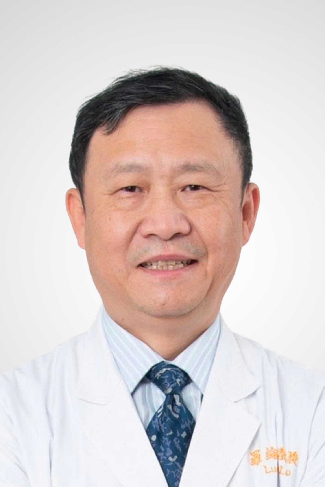
Lun-Jou Lo, MD, PhD
GS.TS.BS. Lun-Jou Lo
Professor, Plastic & Reconstructive Surgery
Chang Gung University & Chang Gung Memorial Hospital · Taipei, Taiwan
Chang Gung University & Chang Gung Memorial Hospital · Taipei, Taiwan
Giáo sư Phẫu thuật Tạo hình & Tái tạo
Đại học & Bệnh viện Tưởng niệm Trường Canh · Đài Bắc, Đài Loan
Đại học & Bệnh viện Tưởng niệm Trường Canh · Đài Bắc, Đài Loan
🇹🇼
Dr. Lun-Jou Lo is a Professor of Plastic and Reconstructive Surgery at Chang Gung Memorial Hospital, one of the leading centers for craniofacial surgery in Asia. He completed his medical training at National Taiwan University and his plastic surgery training at Chang Gung Memorial Hospital, followed by fellowship training at Washington University in St. Louis.
Bác sĩ Lun-Jou Lo là Giáo sư Phẫu thuật Tạo hình và Tái tạo tại Bệnh viện Chang Gung Memorial, một trong những trung tâm hàng đầu châu Á về phẫu thuật sọ mặt. Ông hoàn thành đào tạo y khoa tại Đại học Quốc gia Đài Loan và đào tạo chuyên ngành phẫu thuật tạo hình tại Bệnh viện Chang Gung Memorial, sau đó tiếp tục chương trình fellowship tại Đại học Washington ở St. Louis.
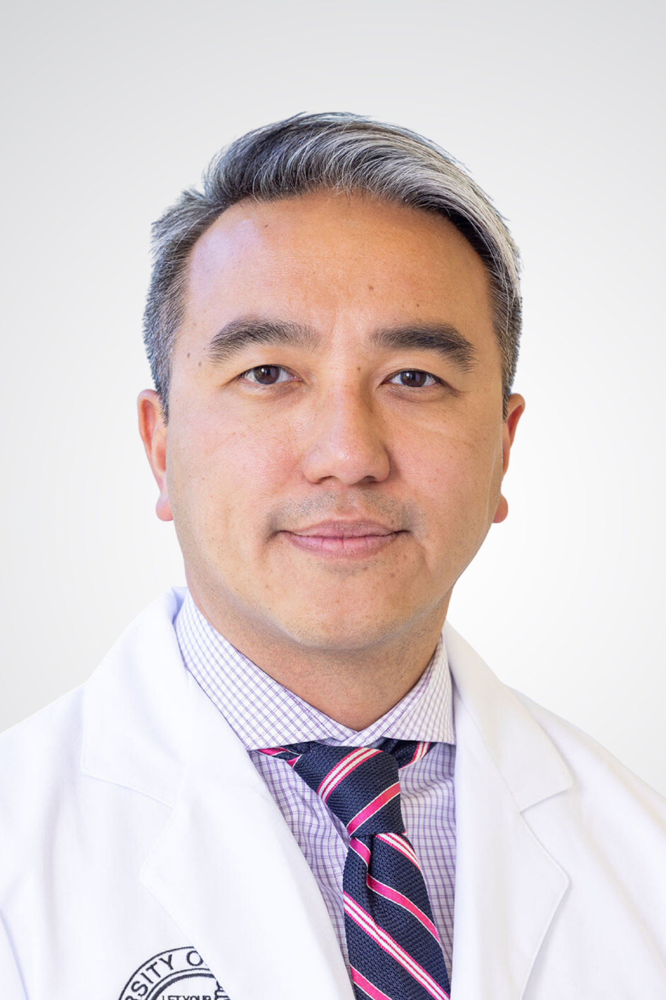
Phuong D. Nguyen, MD
GS.BS. Phuong D. Nguyen
Professor, Plastic & Reconstructive Surgery
University of Colorado · Children's Hospital Colorado, USA
University of Colorado · Children's Hospital Colorado, USA
Giáo sư Phẫu thuật Tạo hình & Tái tạo
Đại học Colorado · Bệnh viện Nhi Colorado, Hoa Kỳ
Đại học Colorado · Bệnh viện Nhi Colorado, Hoa Kỳ
🇺🇸🇻🇳
Dr. Phuong D. Nguyen is a Professor of Surgery at the University of Colorado and Chief of Pediatric Plastic Surgery at Children’s Hospital Colorado. He also serves as Associate Vice Chair for Global Surgery, with a clinical focus on pediatric plastic and craniofacial surgery, including cleft care, facial reanimation, orthognathic surgery, and complex craniofacial reconstruction.
Bác sĩ Phương D. Nguyễn là Giáo sư Ngoại khoa tại Đại học Colorado và Trưởng khoa Phẫu thuật Tạo hình Nhi tại Bệnh viện Nhi Colorado. Ông đồng thời giữ vai trò Phó Chủ nhiệm phụ trách Phẫu thuật Toàn cầu, với chuyên môn lâm sàng tập trung vào phẫu thuật tạo hình nhi và phẫu thuật sọ mặt, bao gồm điều trị khe hở, tái tạo vận động khuôn mặt, phẫu thuật chỉnh hình xương hàm và các ca tái tạo sọ mặt phức tạp.
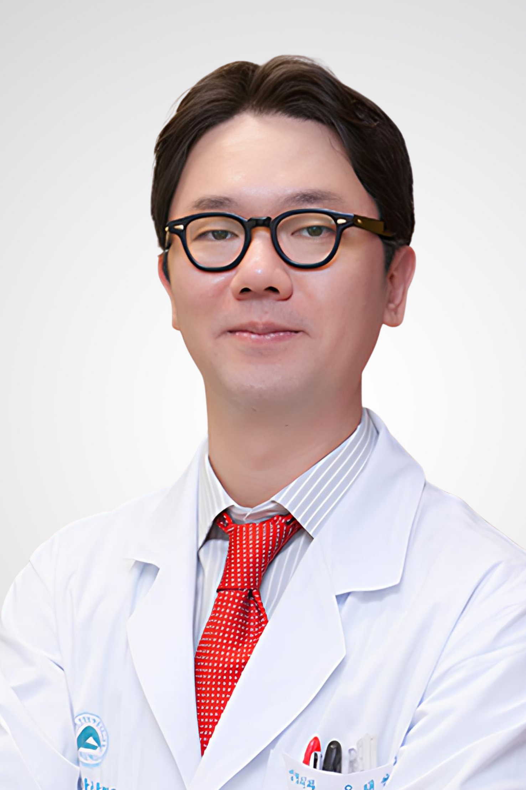
Tae-Suk Oh, MD, PhD
GS.TS.BS. Tae-Suk Oh
Professor & Chair, Plastic Surgery
Asan Medical Center, Ulsan University · Seoul, South Korea
Asan Medical Center, Ulsan University · Seoul, South Korea
Giáo sư Trưởng khoa Phẫu thuật Tạo hình
Trung tâm Y khoa Asan, Đại học Ulsan · Seoul, Hàn Quốc
Trung tâm Y khoa Asan, Đại học Ulsan · Seoul, Hàn Quốc
🇰🇷
Dr. Tae-Suk Oh is a Professor and Chair of Plastic Surgery at Asan Medical Center, one of the leading centers for reconstructive surgery in Asia. His clinical practice focuses on head and neck reconstruction, facial nerve surgery, cleft care, and complex facial trauma.
Bác sĩ Tae-Suk Oh là Giáo sư và Trưởng khoa Phẫu thuật Tạo hình tại Trung tâm Y khoa Asan, một trong những trung tâm hàng đầu châu Á trong lĩnh vực phẫu thuật tái tạo. Hoạt động lâm sàng của ông tập trung vào tái tạo vùng đầu cổ, phẫu thuật thần kinh mặt, điều trị khe hở và các chấn thương khuôn mặt phức tạp.
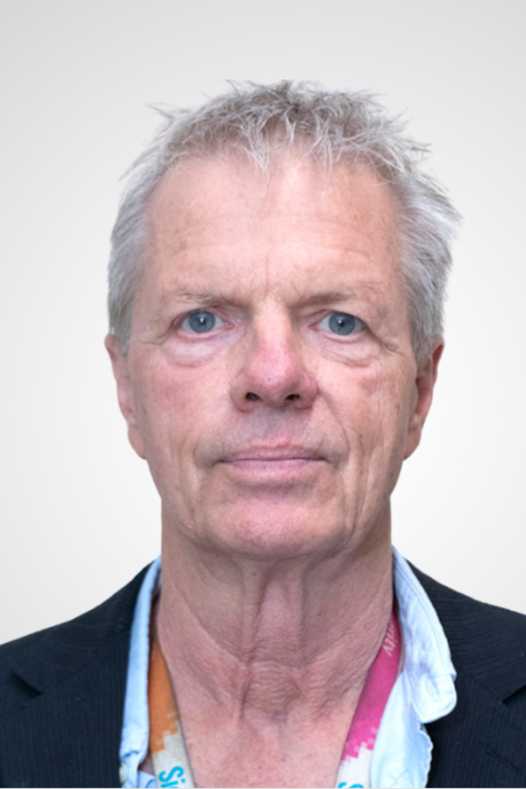
John H. Phillips, MD
PGS.BS. John H. Phillips
Associate Professor, Surgery · Chief, Division of Plastic Surgery
Hospital for Sick Children (SickKids), University of Toronto · Canada
Hospital for Sick Children (SickKids), University of Toronto · Canada
Phó Giáo sư Ngoại khoa · Trưởng đơn vị Phẫu thuật Tạo hình
Bệnh viện Nhi SickKids, Đại học Toronto · Canada
Bệnh viện Nhi SickKids, Đại học Toronto · Canada
🇨🇦
Dr. John H. Phillips is a senior plastic and reconstructive surgeon at The Hospital for Sick Children (SickKids) and an Associate Professor of Surgery at the University of Toronto. He currently serves as Chief of the Division of Plastic Surgery and Director of CanMEDS, with a career spanning clinical leadership, education, and research.
Bác sĩ John H. Phillips là chuyên gia phẫu thuật tạo hình và tái tạo giàu kinh nghiệm tại Bệnh viện Nhi SickKids (The Hospital for Sick Children), đồng thời là Phó Giáo sư Ngoại khoa tại Đại học Toronto. Ông hiện là Trưởng khoa Phẫu thuật Tạo hình và Giám đốc CanMEDS, với sự nghiệp trải rộng trên các lĩnh vực lãnh đạo lâm sàng, đào tạo và nghiên cứu.
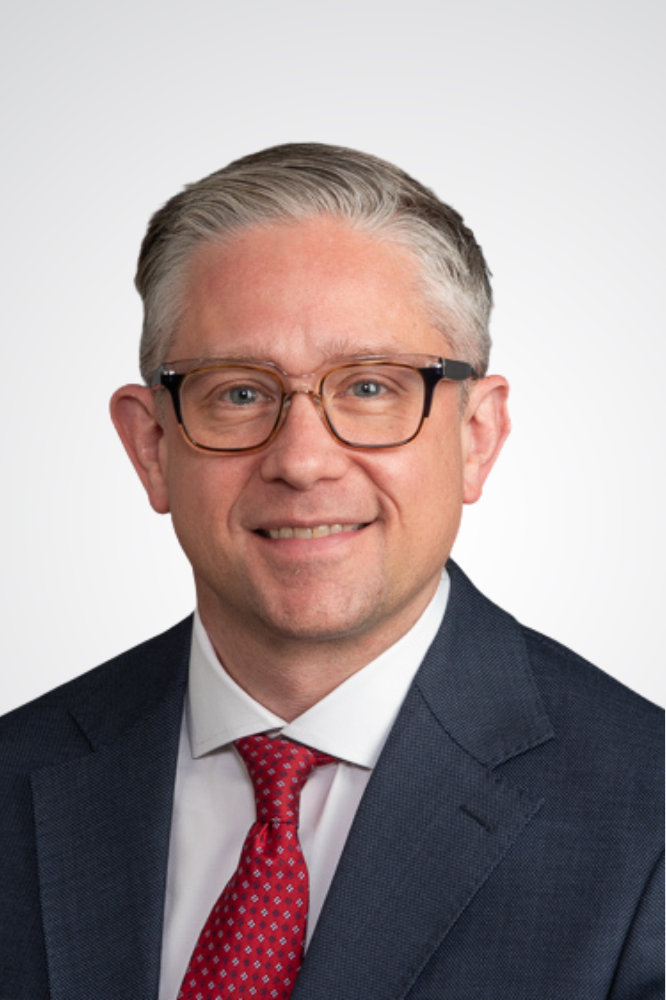
Christopher M. Runyan, MD, PhD
PGS.TS.BS. Christopher M. Runyan
Associate Professor & Vice Chair, Plastic & Reconstructive Surgery
Wake Forest School of Medicine · North Carolina, USA
Wake Forest School of Medicine · North Carolina, USA
Phó Giáo sư, Phó Trưởng khoa Phẫu thuật Tạo hình & Tái tạo
Trường Y Wake Forest · Bắc Carolina, Hoa Kỳ
Trường Y Wake Forest · Bắc Carolina, Hoa Kỳ
🇺🇸
Dr. Christopher M. Runyan is an Associate Professor and Vice Chair of Plastic and Reconstructive Surgery at Wake Forest School of Medicine. He also serves as Program Director for the Integrated Plastic and Reconstructive Surgery residency, playing a key role in surgical education and training.
Bác sĩ Christopher M. Runyan là Phó Giáo sư và Phó Trưởng khoa Phẫu thuật Tạo hình và Tái tạo tại Trường Y Wake Forest. Ông đồng thời là Giám đốc Chương trình đào tạo nội trú tích hợp chuyên ngành Phẫu thuật Tạo hình và Tái tạo, giữ vai trò quan trọng trong đào tạo và phát triển nguồn nhân lực phẫu thuật.
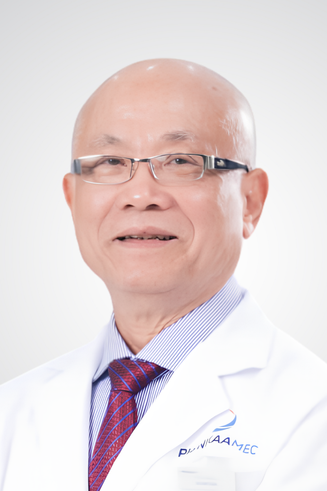
Le Van Son, MD, PhD
PGS.TS.BS.Lê Văn Sơn
Head, Faculty of Odonto-Stomatology
Phenikaa University · Ha Noi, Viet Nam
Phenikaa University · Ha Noi, Viet Nam
Trưởng khoa Răng Hàm Mặt
Đại học Phenikaa · Hà Nội, Việt Nam
Đại học Phenikaa · Hà Nội, Việt Nam
🇻🇳
Dr. Le Van Son is an experienced oral and maxillofacial surgeon in Viet Nam, with a long-standing career spanning clinical practice, academic training, and institutional leadership. He currently serves as Head of the Faculty of Odonto-Stomatology at Phenikaa University and is actively involved in clinical care at the Phenikaa Dental Clinic.
PGS.TS.BS. Lê Văn Sơn là chuyên gia phẫu thuật hàm mặt giàu kinh nghiệm tại Việt Nam, với sự nghiệp lâu dài trải rộng trên các lĩnh vực lâm sàng, đào tạo học thuật và quản lý chuyên môn. Ông hiện là Trưởng khoa Răng Hàm Mặt tại Trường Đại học Phenikaa, đồng thời tham gia khám và điều trị tại Phòng khám Răng Hàm Mặt Phenikaa.

Daniela Tanikawa, MD, PhD
TS.BS. Daniela Tanikawa
Coordinator, Cleft Lip & Palate Center
Sabará Children's Hospital & Menino Jesus Municipal Hospital · São Paulo, Brazil
Sabará Children's Hospital & Menino Jesus Municipal Hospital · São Paulo, Brazil
Điều phối viên Trung tâm Khe hở môi – vòm miệng
Bệnh viện Nhi Sabará & Bệnh viện Menino Jesus · São Paulo, Brazil
Bệnh viện Nhi Sabará & Bệnh viện Menino Jesus · São Paulo, Brazil
🇧🇷
Dr. Daniela Tanikawa is a plastic surgeon specializing in cleft lip and palate care, based in São Paulo, Brazil. She serves as Coordinator of the Cleft Lip and Palate Center at Sabará Children’s Hospital and is an attending physician at Hospital Municipal Infantil Menino Jesus, one of the leading referral centers for cleft care in the region.
Bác sĩ Daniela Tanikawa là bác sĩ phẫu thuật tạo hình chuyên sâu trong điều trị khe hở môi – vòm miệng, hiện công tác tại São Paulo, Brazil. Bà là Điều phối viên Trung tâm Khe hở môi – vòm miệng tại Bệnh viện Nhi Sabará, đồng thời là bác sĩ điều trị tại Bệnh viện Nhi Menino Jesus – một trong những trung tâm điều trị khe hở hàng đầu trong khu vực.
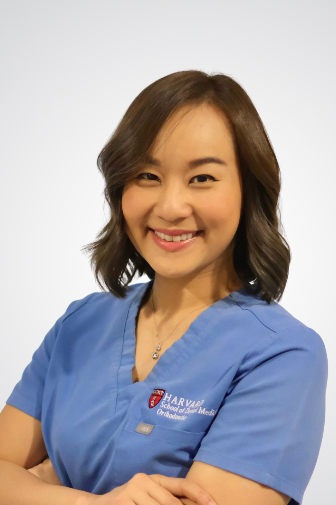
Buddhathida Wangsrimongkol, MD
PGS.BS. Buddhathida Wangsrimongkol
Assistant Professor, Orthodontics · Khon Kaen University
Tawanchai Center · Thailand
Tawanchai Center · Thailand
Phó Giáo sư · Đại học Khon Kaen
Trung tâm Tawanchai · Thái Lan
Trung tâm Tawanchai · Thái Lan
🇹🇭
Dr. Buddhathida Wangsrimongkol is an orthodontist specializing in craniofacial and cleft care, with a focus on integrating orthodontics into multidisciplinary treatment. She is currently an Assistant Professor at Khon Kaen University and a member of the cleft team at the Tawanchai Center, one of Thailand’s leading centers for cleft care.
Bác sĩ Buddhathida Wangsrimongkol là bác sĩ chỉnh nha chuyên sâu trong lĩnh vực sọ mặt và khe hở, với trọng tâm là tích hợp chỉnh nha vào mô hình điều trị đa chuyên khoa. Bà hiện là Giảng viên tại Đại học Khon Kaen và là thành viên của nhóm điều trị khe hở tại Trung tâm Tawanchai, một trong những trung tâm hàng đầu tại Thái Lan trong lĩnh vực này.
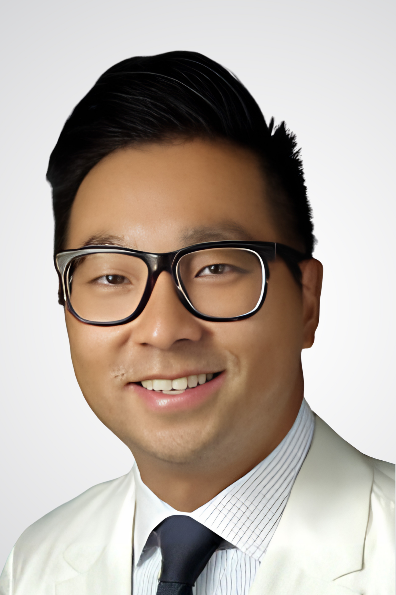
Robin Yang, MD, DDS
PGS.BS. Robin Yang
Assistant Professor · Director, Pediatric Plastic Surgery
Johns Hopkins School of Medicine · Maryland, USA
Johns Hopkins School of Medicine · Maryland, USA
Giảng viên · Giám đốc Phẫu thuật Tạo hình Nhi
Trường Y Johns Hopkins · Maryland, Hoa Kỳ
Trường Y Johns Hopkins · Maryland, Hoa Kỳ
🇺🇸
Dr. Robin Yang is a pediatric craniofacial surgeon at Johns Hopkins University and serves as Director of Pediatric Plastic Surgery. He also holds a leadership role as Division Chief of Oral and Maxillofacial Surgery and Dentistry within the Department of Otolaryngology–Head and Neck Surgery. His clinical practice focuses on orthognathic surgery, pediatric maxillofacial pathology, and congenital craniofacial deformities.
Bác sĩ Robin Yang là chuyên gia phẫu thuật sọ mặt nhi khoa tại Đại học Johns Hopkins, đồng thời là Giám đốc Phẫu thuật Tạo hình Nhi. Ông cũng giữ vai trò Trưởng đơn vị Phẫu thuật Hàm mặt và Nha khoa trong Khoa Tai Mũi Họng – Phẫu thuật Đầu cổ. Hoạt động lâm sàng của ông tập trung vào phẫu thuật chỉnh hình xương hàm, bệnh lý hàm mặt nhi khoa và các dị tật sọ mặt bẩm sinh.